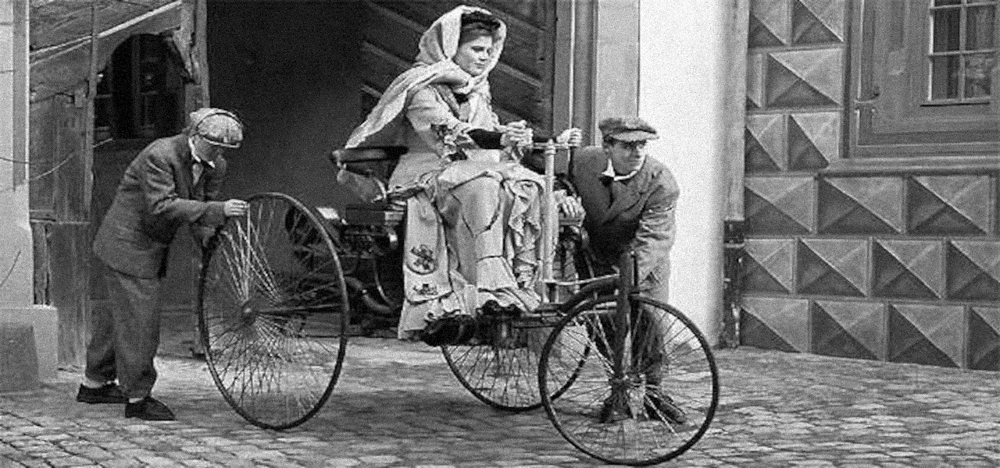

Surgimento do triciclo - AC/DC até o Seculo XXI
66 milhões de anos a.C
Surgiram os Triceratops, que foram uma maneira da natureza evoluir o conceito Tri muito antes mesmo da humanidade ou qualquer tipo de estudo surgir, provando assim a eficiencia natural dessas maquinas.
Foto do Pexels - Autor Mehmet Turgut Kirkgoz - Triceratops [imagem editada]
9500 a.C
Datam os Trigos encontrados mais antigos da humanidade, esse periodo também não é muito distante das primeiras Tríbos já encontradas que se tem noticia, onde provavelmente utilizaram desse alimento tão vigoroso para evoluir sua população.
3000 e 2500 anos a.C
Surgiram as charretes, carruagem, carroça ou carroção, que eram veiculos com 2 rodas traseiras mas com um cavalo na frente, cavalo esse que remete a uma Terceira roda o que talvez já possa ser considerado um primeiro tipo de Triciclo por alguns, é possivel encontrar esses aventureiros de carruagem icônicos até hoje por ai!
Neste mesmo período, acredita ter sido inventado também o primeiro Tripé que se tem noticia, utilizado para suportar caldeirões antigos.
Foto do Pexels - Autor Pixabay - Homem andando de carruagem [imagem editada]
400 anos d.C
Temos artefatos dos primeiros Tridentes encontrados pela humanidade, provando também mais uma vez a eficiencia que a tecnologia de Três pontas podia oferecer.
1550 - d.C
Já eram testado os primeiros protótipos do que um dia seria um potente Triciclo motorizado, nessa epoca também foi criada a primeira maquina de Tricô.
aventurasnahistoria.uol.com.br - Bertha Benz e a primeira viagem de automóvel [imagem editada]
1609 - d.C
Nessa epoca o governador-geral do Brasil passou a ser acessorado pelo ouvidor-geral nos assuntos relacionados a justiça, tendo sido instalado o primeiro Tribunal do Brasil.
Foto do Pexels - Autor Savvas Stavrinos - Aperto de mãos monocromatico [imagem editada]
Em 1940 - d.C
Durante a segunda guerra mundial, o Triciclo teve um papel fundamental atravessando as Trincheiras, sendo utilizado por militares como veiculos de locomoção em campo e eram muito barulhentos!

www.motonline.com.br/noticia/triciclo-harley-a-venda-de-guerra/ [imagem editada]
SECULO XXI
Atualmente já é emplacado o veiculo mais eficiente de Três rodas que se tem noticia, focado em ser um hibrido interessante entre moto e carro, o Treículo gera até certa confusão em quem vê essas carrocerias potentes pela estrada ou durante as Travessias quando eles param o transito da cidade ou quaisquer rodovias pelo mundo, fazendo os desavisados pensarem que eles são algum tipo de cowboy ou uma nova categoria de motoqueiro.
Fonte: Facebook original do Zeca [imagem editada]
Continue lendo >
Capitulo 1
O Grande Dragão Vermelho